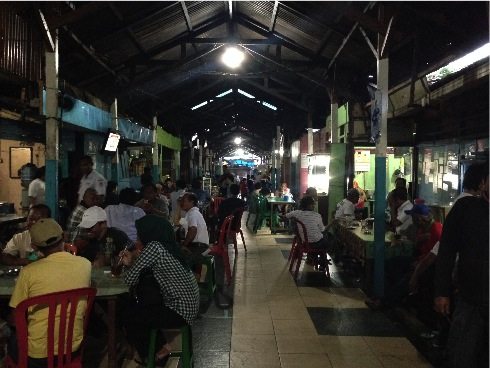

Jalan Roda: Kawasan Kuliner dan Kongko-Kongko Jalan Roda, adalah salah satu kawasan kuliner di kota Manado. Lokasinya berdekatan dengan eks pasar Minahasa (kini Shopping Center), berjarak sekitar 500 meter dari Zero Point.Roda adalah bahasa Manado, yang artinya gerobak atau pedati yang ditarik oleh sapi atau kuda.Kemajuan kota Manado yang pesat akhirnya meniadakan keberadaan Roda sebagai alat angkut tradisional, namun jalan yang dilaluinya tetap ada dan terpelihara, dan telah berubah fungsi menjadi lokasi kongko-kongko, yang kini populer dengan sebutan Jalan Roda.Kongko-kongko, adalah bahasa Manado, yang artinya berkumpul dan bercerita santai, tapi acapkali berubah menjadi percakapan serius hingga menghasilkan kesepakatan.Saat kongko-kongko rasanya lebih mood bila dilengkapi minum kopi dan camu-camu (snacks) khas Manado. Salah satu lokasi minum kopi yang asyik di Manado adalah di jalan Roda, atau populer dengan nama Jarod.Asyik karena sambil minum kopi terjadi komunikasi atau percakapan-percakapan hangat dan lepas diselingi canda dan gelak tawa. Topik yang dibicarakan beragam. Mulai dari hal yang sepele sampai yang sangat serius, antara lain bisnis kecil-kecilan seperti menawarkan batu akik, pakaian, tanah dan mobil.Topik pembicaraan tidak hanya masalah ekonomi atau jual beli barang, tapi juga menyangkut masalah politik lokal, nasional, bahkan dunia, semuanya seru dikupas tuntas. Karena itu, tak mengherankan jika Jarod dijuluki DPRD Tingkat III.Menariknya, walaupun berbeda persepsi, tapi tak ada luapan emosi negatif yang terjadi, semua gembira, bahagia, senang dan puas. Puas dengan kopi dan suasananya yang menyenangkan dan hangat, puas dengan keseruan percakapan dan bertemu dengan banyak kawan.Jarod tidak hanya menjadi lokasi minum kopi, tapi juga menjadi lokasi kongko-kongko. Ada yang datang hanya sekedar bercerita, melihat-lihat, bertemu kawan lama, berbisnis, main catur dan menikmati kelezatan makanan khas Manado. Hampir semua suku, agama dan profesi menyatu di lokasi yang berbentuk huru L ini. Para pengunjungnya mulai dari orang biasa, mahasiswa, calo, makelar, budayawan, wartawan, pebisnis, politisi dan pemikir, semuanya menyatu dan membaur menjadi satu tanpa perbedaan status sosial. Sejumlah tokoh yang dikenal luas oleh masyarakat pernah berkunjung di Jarod, antara lain Wiranto, Yusril Ihza Mahendra, Gita Wirjawan, Hazim Muzadi, Yenny Wahid, Abraham Lunggana alias Lulung dan musisi Iwan Fals.Acapkali Jalan Roda (Jarod) menjadi lokasi sosialisasi program pemerintah kota Manado. Juga sering dimanfaatkan oleh para calon kepala daerah dan legislatif untuk mengsosialisasikan visi dan program.Salah satu keunikkan Jarod adalah kopi stenga (bahasa Manado), yang artinya kopi setengah gelas dan kopi lombo (encer). Untuk memesan kopi stenga tidak perlu keluarkan suara. Cukup mengangkat jari dengan posisi ujung jempol diletakkan di tengah jari telunjuk. Itu adalah tanda kopi stenga.Walaupun kafe modern dan rumah kopi tumbuh pesat di kota Manado, namun kopi di Jarod tetap eksis dan tetap berputar bagai roda. Harganya yang murah meriah dan suasananya yang ramai merupakan daya tariknya, yang membuatnya tak sepi dari pengunjung.Selain menjajakan kopi, di Jarod juga tersedia tinutuan (bubur Manado), pisang goroho goreng dan mie cakalang, semuanya halal dan harganya terjangkau. SolMont.